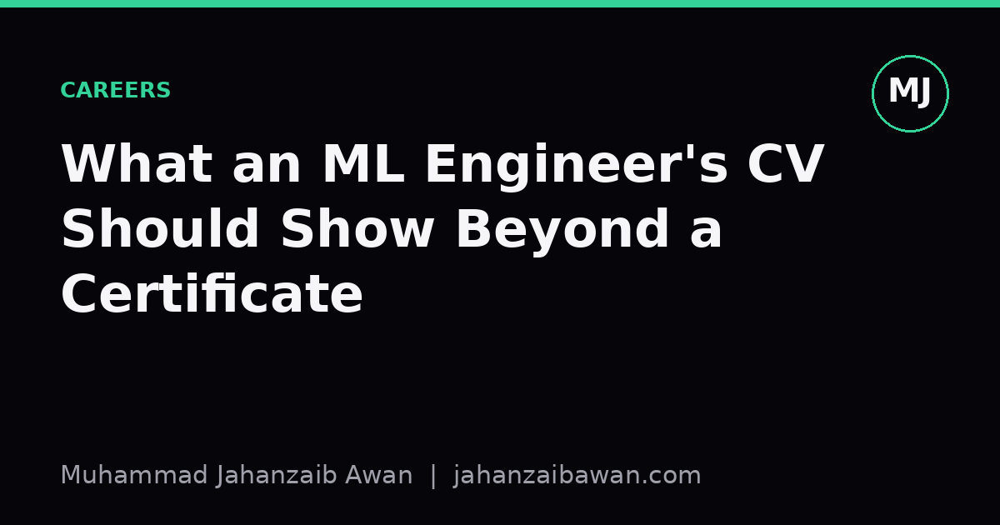

What an ML Engineer's CV Should Show Beyond a Certificate
Certificates prove you sat through material. Your CV has to prove you can make a model work, defend your choices, and survive contact with messy data.

The certificate problem
I have nothing against certificates. I have done several myself, and they are a reasonable way to structure your own learning when nobody is grading you. But a certificate answers a narrow question: did this person complete a syllabus. It says almost nothing about whether they can take a vague business problem, turn it into a modelling task, and produce something that still works when the data shifts three months later. Hiring managers know this, which is why a CV listing ten certificates and no evidence of judgement tends to get skimmed rather than read.
The gap is not about knowledge. Most certificate courses teach the right concepts: gradient descent, cross-validation, regularisation, the usual canon. The gap is about decisions made under uncertainty, with incomplete data, against a deadline. Nobody tests that in a multiple-choice quiz at the end of a video course. So if your CV reads like a transcript of courses completed, you are effectively asking the reader to take your competence on faith. A stronger CV shows the faith is unnecessary because the evidence is already there.
Consider two candidates applying for the same role. One lists: completed a deep learning specialisation, completed a certificate in applied statistics, completed a cloud platform certification. The other writes: built a churn model for a retail dataset, discovered that a naive time-based split changed the reported AUC from 0.91 to 0.74, fixed the leakage, and documented why the original number was misleading. The second line is three sentences, no certificate attached, and it tells you more about how this person thinks than the first candidate's entire list.
Show the mistakes you caught, not just the models you trained
One of the most convincing things a CV or portfolio can demonstrate is that the author has been burned by a subtle error and knows how to spot it next time. Data leakage is the classic example. Imagine a project predicting whether a loan will default, where the dataset includes a column recording the final account status at closure. If that column is included as a feature, the model will appear to perform extremely well in cross-validation, perhaps 97 percent accuracy, because it is effectively seeing the answer. A junior approach reports the 97 percent and moves on. A more mature approach asks when each feature became available relative to the prediction point, finds the leak, removes it, and reports the honest number, which might be closer to 78 percent. That drop is not a failure story; it is the single strongest proof of competence you can put on a CV, because it shows you do not trust your own metrics by default.
The same instinct applies to train-test splits more generally. Random splits are fine for data with no temporal or group structure, but most real-world problems have both. A CV that mentions building a model to forecast demand and specifically notes using a rolling time-based split, rather than a random one, signals that the person understands why a random split would let future information bleed into training. Similarly, grouping by customer ID rather than by transaction row matters whenever the same customer appears multiple times; otherwise, the model is partly memorising customers it has already seen rather than generalising to new ones.
What makes this kind of detail valuable on a CV is that it is specific and falsifiable. Anyone can write 'strong understanding of evaluation methodology.' Far fewer people can write a two-line description of an actual leakage bug they found, what it inflated the metric to, and what the corrected number was. The second version cannot be faked convincingly, because faking it requires actually understanding the mechanism well enough to invent a plausible scenario, at which point you may as well have just done the work.

Baselines, ablations, and the discipline of comparison
A certificate teaches you that a gradient-boosted tree or a transformer exists. It rarely teaches you the discipline of first building something embarrassingly simple and measuring against it. A CV line describing a sentiment classification project is unremarkable on its own. The same line becomes credible when it mentions that a bag-of-words logistic regression scored 85 percent accuracy, and the fine-tuned transformer reached 89 percent, at roughly forty times the training cost. That comparison tells a reader three things at once: the candidate understands that complexity has a price, they measured that price rather than assuming it was worth paying, and they can communicate a trade-off rather than just a headline number.
Ablations serve a similar purpose at a smaller scale. If a project involved several engineered features plus a model, stating which features actually moved the metric and by how much is far more informative than simply listing the final architecture. Suppose a fraud detection project used transaction amount, time of day, merchant category, and a rolling average of recent spend. An ablation showing that removing the rolling average dropped recall from 0.81 to 0.68, while removing merchant category barely changed anything, demonstrates that the author tested their assumptions instead of keeping every feature because it seemed plausible. This is the kind of thing that never appears on a certificate transcript, because certificates are built around fixed exercises with known answers, not open-ended problems where half your features might be dead weight.
None of this needs to be dressed up. A CV does not need jargon to make this point; it needs numbers that are specific enough to sound like they came from an actual experiment rather than a claim. 'Reduced false positive rate from 12 percent to 7 percent by adjusting the classification threshold based on the precision-recall curve rather than using the default 0.5' is a sentence that does real work, because it shows the candidate did not simply accept library defaults.
Reproducibility and the practical takeaway
The last thing a certificate almost never teaches, and a CV can quietly demonstrate, is reproducibility. A project description that mentions a fixed random seed, a clearly documented data split, and a short note on how results were validated signals an engineer who understands that machine learning results are only useful if someone else, including your future self, can regenerate them. This matters more in industry than in coursework, because production models get retrained, audited, and challenged by colleagues who were not in the room when the original decisions were made.
The practical takeaway is simple: treat your CV and portfolio as evidence rather than a summary of attendance. List the certificates briefly if they are relevant, but spend the bulk of your space on specific, falsifiable details: the metric before and after a fix, the baseline you compared against, the split strategy you chose and why, the ablation that told you a feature was not pulling its weight. These details are harder to write because they require you to have actually done careful work, but that difficulty is precisely what makes them convincing. A hiring manager reading ten CVs in an afternoon will forget the list of courses by the next candidate. They will remember the person who caught a leak that turned 97 percent into 78 percent, because that is the kind of judgement no certificate can certify.